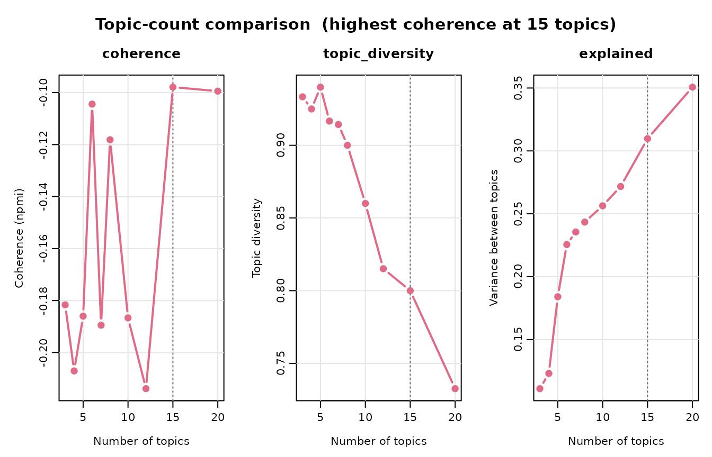

Choosing the number of topics and the granularity
Written by Mohammed Saqr and Sonsoles López-Pernas
Source:vignettes/articles/choosing-topics.Rmd
choosing-topics.RmdTwo decisions shape a semantic topic model before any topic is read: how many topics the texts are divided into, and what unit of text is divided. Neither has a correct value that can be estimated from the data. k-means (Lloyd, 1982) partitions the embeddings into as many groups as it is asked for, and every additional group captures more of their variation, so a fit criterion alone always prefers more topics. The unit matters as much: a document that does several things at once can belong to only one topic, while its sentences can belong to different ones.
This guide treats both decisions as comparisons. Candidate models are fitted on the same embeddings and compared on measures of their quality, and the candidates the measures favor are then examined for topics that duplicate one another. The measures inform the choice; the representative texts of the candidates decide it.
library(sbert)
#> sbert 0.6.0: Sentence-BERT embeddings and topic models in R.
#> 14 pinned models (see models()); default: all-MiniLM-L6-v2.
#> A model is downloaded only on request, once, and verified by SHA-256.Data
The analysis uses the first 600 distinct feedback messages of
feedback_translations, whose sentence embeddings ship with
the package as feedback_embeddings (row i of the
matrix embeds row i of corpus), so every model
below is fitted without downloading a model.
-
translation: the English text of each message; the modeled text. -
n: the number of times the message occurs in the full corpus, added bydedupe(). -
feedback_embeddings: a 600 by 384 matrix ofall-MiniLM-L6-v2embeddings, one row per message.
How do the candidate counts compare?
compare_topics() fits one model for every candidate
number of topics on one shared set of embeddings, and keeps the fitted
models. The candidates here run from 3 to 20 topics:
sweep <- compare_topics(corpus, column = "translation",
n_topics = c(3, 4, 5, 6, 7, 8, 10, 12, 15, 20),
embeddings = feedback_embeddings)
sweep
#> <sbert_topic_sweep> 10 candidates, coherence measure: npmi
#> n_topics coherence topic_diversity explained converged
#> 3 -0.1817 0.933 0.111 TRUE
#> 4 -0.2071 0.925 0.123 TRUE
#> 5 -0.1860 0.940 0.184 TRUE
#> 6 -0.1044 0.917 0.226 TRUE
#> 7 -0.1895 0.914 0.236 TRUE
#> 8 -0.1181 0.900 0.243 TRUE
#> 10 -0.1867 0.860 0.256 TRUE
#> 12 -0.2139 0.815 0.272 TRUE
#> 15 -0.0979 0.800 0.310 TRUE
#> 20 -0.0994 0.733 0.351 TRUE
#>
#> Fitted models retained: fitted(x, n_topics = 15)Each row reports three measures and a convergence flag.
-
explainedis the share of the variation in the embeddings that lies between topics, the between-topic sum of squares over the total. It is the only measure computed from the embeddings. It rises from 0.111 with three topics to 0.351 with twenty, and it can only rise: a partition into more groups can always reproduce a coarser one and then split a group further, which lowers the within-topic variation. It describes how much structure each count captures, never which count to use. -
coherenceis the mean normalized pointwise mutual information (NPMI; Bouma, 2009) of each topic’s top ten terms: whether the words that describe a topic occur together in the same messages. It lies between -1 and 1, and higher is better. -
topic_diversityis the share of distinct words among the pooled top-ten lists of all topics (Dieng et al., 2020). It is 1 when no two topics share a top word, and it falls as topics begin to repeat each other’s vocabulary. -
convergedrecords whether k-means reached a stable partition withiniter_maxiterations (default 100). A candidate that did not converge also raises a warning of classsbert_no_converge, and its measures describe an unfinished partition. Every candidate here converged.
Coherence is negative at every count, because the messages are short and two content words rarely occur in the same message. It does not fall steadily as topics are added: it has a local peak at six topics (-0.104), a second at eight (-0.118), and reaches its highest values at fifteen (-0.0979) and twenty (-0.0994). Topic diversity falls from 0.940 at five topics to 0.733 at twenty, a first sign that the larger models describe several topics with the same words.
summary() states the most coherent candidate in one row,
together with whether every candidate converged:
summary(sweep)
#> Topic-count comparison: highest mean npmi coherence per level
#>
#> segment n_candidates min_topics max_topics best_n_topics coherence topic_diversity
#> document 10 3 20 15 -0.0979 0.8
#> explained all_converged
#> 0.31 TRUEplot() draws the three measures against the number of
topics, with a dotted line at the most coherent candidate:
plot(sweep)
The plot shows the pattern that makes the highest coherence a poor rule. Between three and twelve topics the curve has a clear maximum at six; beyond twelve, coherence climbs again while diversity drops. The next two sections ask why.
Why do small topics flatter the mean coherence?
The coherence of a candidate is the plain mean over its topics, so a
topic of three messages counts as much as a topic of a hundred and
sixty. fitted() takes the fifteen-topic model out of the
comparison without refitting it, and summary() lists the
size and coherence of every topic:
model_15 <- fitted(sweep, n_topics = 15)
summary(model_15)
#> Semantic topic model summary
#> documents: 600
#> topics: 15
#> model: precomputed embeddings
#> between/total SS: 31.0%
#> mean npmi coherence: -0.0979
#> topic diversity: 0.800 (top 10 terms)
#>
#> topic label n_documents
#> 1 Where is the cow and the cake? Choose all the pictures... 162
#> 2 All the ones between the cat and the strawberry. 97
#> 3 What does “all the ones between the dog and the... 86
#> 4 Are you sure you have fewer pictures in the red box than... 47
#> 5 Which one comes right after the eighth picture? 41
#> 6 All between the swan and the cat. 32
#> 7 It is not a person, does not have a hat, and is sitting. 27
#> 8 What does “all between the swan and the bag” mean? 26
#> 9 What does all the pictures between the apple and the... 21
#> 10 On the right in the middle. Do you know what on the... 17
#> 11 What does “all the ones between the pants and the bus” mean? 16
#> 12 What does it mean to be on the grass? 15
#> 13 Find the train that makes the sound with the number... 8
#> 14 You’re looking for more than one. 3
#> 15 That's right! 2
#> proportion coherence
#> 0.270000 -0.14974
#> 0.161667 -0.39221
#> 0.143333 -0.33728
#> 0.078333 0.30105
#> 0.068333 0.04030
#> 0.053333 -0.54358
#> 0.045000 0.18491
#> 0.043333 -0.57580
#> 0.035000 -0.33242
#> 0.028333 0.16253
#> 0.026667 -0.48450
#> 0.025000 0.23862
#> 0.013333 0.42078
#> 0.005000 0.01946
#> 0.003333 -0.02049The fifteen topics range from 162 messages to 2. The three smallest hold 8, 3 and 2 messages, and the most coherent topic of the model (0.421) is the one with 8 messages, all built around one instruction (Find the train that makes the sound with the number…). Three of the four largest topics, which hold most of the messages, have negative coherence (-0.150 to -0.392). The plain mean therefore describes the small topics more than the corpus.
coherence_weight = "size" weights each topic’s coherence
by its number of messages, so that a tiny topic of near-identical texts
cannot decide the comparison:
sweep_weighted <- compare_topics(corpus, column = "translation",
n_topics = c(3, 4, 5, 6, 7, 8, 10, 12, 15, 20),
embeddings = feedback_embeddings,
coherence_weight = "size")
sweep_weighted
#> <sbert_topic_sweep> 10 candidates, coherence measure: npmi, weighted by topic size
#> n_topics coherence topic_diversity explained converged
#> 3 -0.348 0.933 0.111 TRUE
#> 4 -0.363 0.925 0.123 TRUE
#> 5 -0.259 0.940 0.184 TRUE
#> 6 -0.216 0.917 0.226 TRUE
#> 7 -0.234 0.914 0.236 TRUE
#> 8 -0.240 0.900 0.243 TRUE
#> 10 -0.257 0.860 0.256 TRUE
#> 12 -0.265 0.815 0.272 TRUE
#> 15 -0.180 0.800 0.310 TRUE
#> 20 -0.166 0.733 0.351 TRUE
#>
#> Fitted models retained: fitted(x, n_topics = 20)Weighting lowers the coherence of every candidate, because in every
model the coherent topics are the small ones: for fifteen topics it
moves from -0.0979 to -0.180, for six from -0.104 to -0.216. Up to
twelve topics the weighted measure still peaks at six. Above twelve it
still rises, to -0.180 at fifteen and -0.166 at twenty. Weighting
removes the influence of the tiny topics, and on this corpus that is not
what drives coherence up at high counts; the next section shows what
does. The same weighting is available for a single model as
coherence(model, weight = "size").
Is a count too fine?
A count is too fine when it splits one kind of text into topics that
differ only in wording. topic_hierarchy() measures the
cosine distance between the topic centers and merges the closest topics
step by step; summary() gives each topic its nearest
neighbor:
tree_15 <- topic_hierarchy(model_15)
summary(tree_15)
#> Nearest topic of each topic (cosine distance between centers)
#>
#> topic label nearest_topic
#> 1 Where is the cow and the cake? Choose all the pictures... 9
#> 2 All the ones between the cat and the strawberry. 6
#> 3 What does “all the ones between the dog and the... 8
#> 4 Are you sure you have fewer pictures in the red box than... 5
#> 5 Which one comes right after the eighth picture? 1
#> 6 All between the swan and the cat. 2
#> 7 It is not a person, does not have a hat, and is sitting. 12
#> 8 What does “all between the swan and the bag” mean? 3
#> 9 What does all the pictures between the apple and the... 1
#> 10 On the right in the middle. Do you know what on the... 5
#> 11 What does “all the ones between the pants and the bus” mean? 3
#> 12 What does it mean to be on the grass? 8
#> 13 Find the train that makes the sound with the number... 5
#> 14 You’re looking for more than one. 4
#> 15 That's right! 10
#> nearest_label distance merge_step
#> What does all the pictures between the apple and the... 0.220 3
#> All between the swan and the cat. 0.183 2
#> What does “all between the swan and the bag” mean? 0.170 1
#> Which one comes right after the eighth picture? 0.360 5
#> Where is the cow and the cake? Choose all the pictures... 0.304 5
#> All the ones between the cat and the strawberry. 0.183 2
#> What does it mean to be on the grass? 0.474 8
#> What does “all the ones between the dog and the... 0.170 1
#> Where is the cow and the cake? Choose all the pictures... 0.220 3
#> Which one comes right after the eighth picture? 0.456 9
#> What does “all the ones between the dog and the... 0.273 4
#> What does “all between the swan and the bag” mean? 0.443 8
#> Which one comes right after the eighth picture? 0.593 11
#> Are you sure you have fewer pictures in the red box than... 0.628 12
#> On the right in the middle. Do you know what on the... 0.697 12
#> merge_height
#> 0.220
#> 0.183
#> 0.170
#> 0.360
#> 0.360
#> 0.183
#> 0.474
#> 0.170
#> 0.220
#> 0.546
#> 0.288
#> 0.474
#> 0.693
#> 0.714
#> 0.714Several pairs lie much closer to each other than to anything else. Topics 3 and 8 (0.170 apart) are both questions of the form What does “all the ones between X and Y” mean?, differing in whether the message says “all the ones between” or “all between”. Topics 2 and 6 (0.183) are the same short hint with the same two phrasings. Topics 1 and 9 (0.220) share the phrase “all the pictures between”, once in an instruction and once inside a question about its meaning. The first two splits follow wording, not what the message does for the learner, and splits of this kind explain the rise of coherence at high counts: a topic restricted to one phrasing has top words that always occur together. The fifteen-topic model is too fine for a question about kinds of feedback.
The same diagnosis applied to the six-topic model:
model_6 <- fitted(sweep, n_topics = 6)
tree_6 <- topic_hierarchy(model_6)
summary(tree_6)
#> Nearest topic of each topic (cosine distance between centers)
#>
#> topic label nearest_topic
#> 1 Where is the cow and the cake? Choose all the pictures... 2
#> 2 All the ones between the cat and the strawberry. 1
#> 3 What does “all the ones between the leaf and the... 5
#> 4 Are you sure you have fewer pictures in the red box than... 1
#> 5 In the top middle box, it means something is in the... 3
#> 6 It is not a person, does not have a hat, and is sitting. 5
#> nearest_label distance merge_step
#> All the ones between the cat and the strawberry. 0.320 2
#> Where is the cow and the cake? Choose all the pictures... 0.320 2
#> In the top middle box, it means something is in the... 0.297 1
#> Where is the cow and the cake? Choose all the pictures... 0.461 4
#> What does “all the ones between the leaf and the... 0.297 1
#> In the top middle box, it means something is in the... 0.538 5
#> merge_height
#> 0.320
#> 0.320
#> 0.297
#> 0.635
#> 0.297
#> 0.738
plot(tree_6)The closest pair in the six-topic model is 0.297 apart: questions about the meaning of a phrase (topic 3) and definitions of a phrase (topic 5). They concern meaning, but one asks the learner and the other tells them, which is a distinction of function rather than of wording. The six topics are not near-duplicates of one another.
Can merging recover a coarser model?
reduce_topics() merges the topics of a fitted model
along the hierarchy, without refitting k-means. Merging the fifteen
topics into twelve folds exactly the three near-duplicate pairs found
above:
topic_sizes(reduce_topics(model_15, n_topics = 12))
#> topic label n_documents
#> 1 1 Where is the cow and the cake? Choose all the pictures... 183
#> 2 2 All the ones between the piglet and the dog. 129
#> 3 3 What does “all the ones between the dog and the... 112
#> 4 4 Are you sure you have fewer pictures in the red box than... 47
#> 5 5 Which one comes right after the eighth picture? 41
#> 6 6 It is not a person, does not have a hat, and is sitting. 27
#> 7 7 On the right in the middle. Do you know what on the... 17
#> 8 8 What does “all the ones between the pants and the bus” mean? 16
#> 9 9 What does it mean to be on the grass? 15
#> 10 10 Find the train that makes the sound with the number... 8
#> 11 11 You’re looking for more than one. 3
#> 12 12 That doesn’t seem right. 2
#> proportion
#> 1 0.30500
#> 2 0.21500
#> 3 0.18667
#> 4 0.07833
#> 5 0.06833
#> 6 0.04500
#> 7 0.02833
#> 8 0.02667
#> 9 0.02500
#> 10 0.01333
#> 11 0.00500
#> 12 0.00333Merging is suited to removing such duplicates. It is not a substitute for fitting a smaller count directly. Merged down to six topics, the fifteen topics become one topic of 457 messages, two of 88 and 42, and three of 8, 3 and 2:
merged_6 <- reduce_topics(model_15, n_topics = 6)
topic_sizes(merged_6)
#> topic label n_documents
#> 1 1 All the ones between the leaf and the unicorn. 457
#> 2 2 There are eight pictures in the gray box. Where is there... 88
#> 3 3 It’s a person, has a hat, and isn’t standing. 42
#> 4 4 Find the train that makes the sound with the number... 8
#> 5 5 You’re looking for more than one. 3
#> 6 6 That doesn’t seem right. 2
#> proportion
#> 1 0.76167
#> 2 0.14667
#> 3 0.07000
#> 4 0.01333
#> 5 0.00500
#> 6 0.00333The hierarchy merges the closest centers first, so the main kinds of feedback, which lie close together, are merged with each other, while the small topics far from everything else survive to the end. The cross-tabulation of the merged model against the six-topic k-means fit shows how differently the two divide the same messages:
assignments <- merge(as.data.frame(model_6), as.data.frame(merged_6),
by = "document_id", suffixes = c("_kmeans", "_merged"))
with(assignments, table(topic_kmeans, topic_merged))
#> topic_merged
#> topic_kmeans 1 2 3 4 5 6
#> 1 184 32 0 7 0 0
#> 2 127 5 0 0 1 0
#> 3 127 4 0 0 0 0
#> 4 0 47 0 1 1 0
#> 5 19 0 15 0 1 2
#> 6 0 0 27 0 0 0The first merged topic absorbs most of k-means topics 1, 2 and 3. To
move to a much smaller count, fit it with compare_topics()
or topics(); use reduce_topics() for the last
few merges of near-duplicate topics.
Should the unit be the document or the sentence?
The second decision is the unit that is embedded and clustered. A
model at the document level gives each document one topic. A model at
the sentence level embeds every sentence, so a document that hints and
then corrects contributes one sentence to each topic, and
topic_gamma() reports the share of each topic in each
document (see Assigning new documents
and topic mixtures). Sentences are also short enough to be read in
full by the encoder, which reads at most 256 tokens of a text with the
default model; long documents are truncated.
segment() splits text into sentences without a model,
which shows how much the unit would change for these messages:
sentences <- with(corpus, segment(translation, level = "sentence"))
nrow(sentences)
#> [1] 781
with(sentences, table(segment))
#> segment
#> 1 2 3
#> 600 177 4The 600 messages hold 781 sentences: 177 messages have a second sentence and 4 a third. Most messages are single sentences, so for this corpus the document is a natural unit. For long texts, such as research abstracts, the choice changes what a topic is.
compare_topics() compares both units in one call when
segment names both levels. Every candidate count is fitted
at every level, and fitted() takes segment =
to pick one. The sentence embeddings are not bundled with the package,
so the chunk below needs a downloaded model and is not run here:
model_download()
levels <- compare_topics(corpus, column = "translation",
n_topics = c(4, 6, 8, 10),
segment = c("document", "sentence"))
summary(levels)
plot(levels)
sentence_model <- fitted(levels, n_topics = 6, segment = "sentence")
topic_sizes(sentence_model, by = "document")summary(levels) gives the most coherent count per level,
and plot(levels) draws one line per level, told apart by
color, point shape and line type. With precomputed embeddings,
embeddings takes a list of matrices named by level, such as
list(document = feedback_embeddings, sentence = sentence_embeddings),
whose sentence matrix has one row per row of
segment(..., level = "sentence"). The coherence of the two
levels is computed on different units, so a comparison between levels
rests on reading their topics more than on their numbers. Splitting long
documents, merging short fragments and capping segment length are
covered in Segmenting long documents.
When to use which
| Question | Verb |
|---|---|
| How do candidate counts compare? |
compare_topics(), plot(sweep)
|
| Which candidate is most coherent? | summary(sweep) |
| Do small topics drive the comparison? |
compare_topics(coherence_weight = "size"),
summary(model)
|
| Did every candidate converge? | the converged column |
| Are some topics near-duplicates? |
topic_hierarchy(), summary(tree),
plot(tree)
|
| Merge near-duplicates without refitting | reduce_topics() |
| Use one candidate | fitted(sweep, n_topics = ) |
| Documents or sentences? | compare_topics(segment = c("document", "sentence")) |
The six-topic model chosen here is read and named in Describing and naming topics, and the full analysis is in Semantic topic modeling with Sentence-BERT.
References
Bouma, G. (2009). Normalized (pointwise) mutual information in collocation extraction. Proceedings of GSCL, 31–40.
Dieng, A. B., Ruiz, F. J. R., & Blei, D. M. (2020). Topic modeling in embedding spaces. Transactions of the Association for Computational Linguistics, 8, 439–453. https://doi.org/10.1162/tacl_a_00325
Lloyd, S. P. (1982). Least squares quantization in PCM. IEEE Transactions on Information Theory, 28(2), 129–137. https://doi.org/10.1109/TIT.1982.1056489